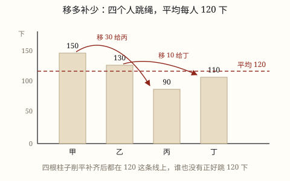

平均数的意义与求法
平均数就是把总数重新分配成同样多以后每份的数，用总数 ÷ 份数求。它代表一组数据的整体水平，不是其中某一个。
| 所属主题 | 平均数 |
|---|---|
| 所属模块 | 统计与概率 |
| 课标学段 | 第二学段（3~4年级） |
| 前置知识 | 除法的初步认识（平均分） |
| 核心素养 | 数据意识应用意识模型意识 |
课标要求
| 统计与概率·数据的收集、整理与表达 | 探索平均数的意义，能解决有关的简单实际问题（例40）。 印刷第 38 页 行为动词：探索 |
|---|---|
| 统计与概率·数据的收集、整理与表达 | 能在简单的实际情境中，合理应用统计图表和平均数（例41），形成初步的数据意识和应用意识。 印刷第 38 页 行为动词：运用 |
说明
四个人跳绳，成绩是 150、130、90、110 下，有的多有的少。如果我们把跳得多的同学的个数「匀」一些给跳得少的，让每个人一样多，这个一样多的数就是平均数。上例中每人都是 120 下，120 就是这组数据的平均数。
求平均数的办法是 \text总数 ÷ \text份数 = \text平均数：(150 + 130 + 90 + 110) ÷ 4 = 480 ÷ 4 = 120。这里的「份数」是数据的个数，4 个人就是 4 份，别数错。
平均数代表的是一组数据的整体水平，它不是其中某一个数据。上例里没有一个人正好跳 120 下，120 是「匀出来」的结果。所以看到「全班平均分 85 分」，不能认为某位同学就是 85 分。
平均数还有一个重要特点：容易受极端值影响。如果这组数据里有人跳了 400 下，其他三个不变，平均数就变成 (400 + 130 + 90 + 110) ÷ 4 = 182.5，一下子被拉高了很多。所以用平均数代表整体水平时，要留意有没有特别大或特别小的数据。
使用场景
比较成绩：两个小组人数不同，比谁跳得好，比总数不公平，比平均数才公平——平均每人跳多少下，一目了然。
看气温：一周的日平均气温能代表这周冷不冷，比只看某一天的最高温更靠谱。
算零花钱：三个月分别存 40 元、35 元、45 元，平均每月存 40 元，用来计划下个学期的开销。
看新闻数据：人均用水量、平均身高、平均每天乘车次数，都是先把总数摊到每一份上再比较。
注意点
平均数是「匀」出来的，可能根本不存在于数据里。四人身高平均 1.4 米，不代表其中有一个人正好 1.4 米。
份数要数准。一周只记录了 5 个工作日的温度，就除以 5，不能除以 7；求 4 个人的平均，就除以 4。
平均数一定在最小数据和最大数据之间，算出来比最大还大、比最小还小，一定是算错了。
有极端值时要多想一想。一个人的数据特别大或特别小，平均数会被「拉偏」，这时光看平均数可能掩盖真实情况。
为什么是这样

图 1：把多的补给少的，四个人就一样多了——这个「一样多」就是平均数 120
算理推导
先做「移多补少」：四个人跳 150、130、90、110 下。150 比 120 多 30，把这 30 个「匀」给只有 90 的同学，他就变成 120；130 比 120 多 10，把这 10 个匀给 110 的同学，他也变成 120（图 1）。四个人全都成了 120，一次不多一次不少。
再看为什么用「总数 ÷ 份数」也能得到同一个数：移多补少的过程中，一个人多出来的正好补给另一个人，总数一直是 480，没有变；把 480 平均分成 4 份，每份就是 120。也就是说，「匀一匀」的结果，等于「先把所有数据合起来，再平均分给每一份」——这就是 \text总数 ÷ \text份数 = \text平均数 的来历，它不是一条要背的公式，而是移多补少的另一种算法。
为什么平均数不等于其中某一个数据：120 是「匀」出来的水平，谁也没有正好跳 120 下。它像一条水平线，把高低不平的柱子削平填满——线的高度由总数决定，而不是由某根柱子决定。
为什么极端值会影响它：总数是所有人贡献的，只要有一个数特别大，总数就被撑大，平均下来自然被拉高；反过来一个特别小的数会把平均数拉低。所以在数据里有「特别离谱」的数时，平均数就不太能代表大多数人的水平了。
动手实验
用积木（或糖果、棋子）摆四摞，分别放 15、13、9、11 块，代表四个人的跳绳成绩（每块代表 10 下）。先数总数：48 块。然后动手移：从第一摞拿 3 块放到第三摞，从第二摞拿 1 块放到第四摞。四摞都变成 12 块，一样高了——这就是平均数 120。再把其中一摞改成 40 块，重新摆一次，看看「平均线」被拉高到多少。
按场景的例题
例 1（场景：校园生活） 小组跳绳比赛
四人小组一分钟跳绳成绩是 150、130、90、110 下，这个小组平均每人跳多少下？平均数 120 下是谁的成绩？
解：(150 + 130 + 90 + 110) ÷ 4 = 480 ÷ 4 = 120。四个人里没有一个人跳 120 下，120 是移多补少匀出来的整体水平。
答：平均每人 120 下；120 不是某一个人的成绩，而是这组的平均水平。
例 2（场景：自然现象） 一周气温记录
周一到周五每天下午 2 时的气温分别是 21℃、23℃、22℃、24℃、25℃，这五天的平均气温是多少？
解：数据有 5 个，就除以 5：(21 + 23 + 22 + 24 + 25) ÷ 5 = 115 ÷ 5 = 23。
答：平均气温是 23℃。注意是 5 天，不是 7 天。
例 3（场景：金融理财） 储蓄罐里的零花钱
乐乐三个月往储蓄罐分别存入 40 元、35 元、45 元，平均每月存多少元？如果他想按这个水平存满一年，一年大约能存多少元？
解：(40 + 35 + 45) ÷ 3 = 120 ÷ 3 = 40 元。按平均每月 40 元算一年：40 × 12 = 480 元。
答：平均每月存 40 元；照这个水平一年约存 480 元。
例 4（场景：行程出行） 一周的地铁票钱
小舟一周 5 天上学坐地铁，每天花的车费是 6 元、6 元、6 元、7 元、10 元，平均每天花多少元？哪一天的数据把平均数拉高了？
解：(6 + 6 + 6 + 7 + 10) ÷ 5 = 35 ÷ 5 = 7 元。前四天都是 6 或 7 元，最后一天 10 元明显偏高，把平均数从 6 元多拉到 7 元。
答：平均每天 7 元；最后一天 10 元是偏高的那个数据，对平均数影响最大。
常用推论
平均数 = 总数 ÷ 份数；反过来，总数 = 平均数 × 份数。
平均数一定在最小的数据和最大的数据之间，不会比最大的还大，也不会比最小的还小。
数据个数不同时，比总数不公平，比平均数才公平。
一组数据里出现特别大或特别小的数时，平均数会被明显拉偏，解释结果时要说明这一点。
易错点
错老师说「全班数学平均分 85 分」，小明就说「那我一定考了 85 分」。
为什么错把平均数当成了「其中某一个数据」。平均分是全班分数匀出来的整体水平，有人高于 85，就有人低于 85。
正确平均分 85 只说明全班的整体水平在 85 分左右，小明可能考 92，也可能考 78，要看他的实际分数。
错看到小河「平均水深 1.1 米」，身高 1.4 米的小舟就认为下水一定安全。
为什么错只看了平均数，忽略了极端值。平均水深 1.1 米可能是大部分地方 0.6 米、有一处深达 2 米匀出来的，最深处远超过身高。
正确平均数会掩盖最深处的情况，判断安全要看最深处有多深，不能只看平均数。
错求周一到周五这 5 天的平均气温，把 5 个数据加起来除以 7。
为什么错份数弄错了：虽然一周有 7 天，但只记录了 5 天的数据，份数就是数据的个数 5。
正确\text平均数 = \text总数 ÷ \text数据的个数 = \text总和 ÷ 5。
直观理解
一壶果汁倒进四个高低不同的杯子，肯定有的满有的浅。把每个杯子里的果汁都倒回壶里搅匀，再平均倒回四个杯子——四杯一样高。这个「一样高」就是平均数：总量没变，只是重新分配了一次。
移多补少一样多，先合后分平均数；平均不是某一人，极端数据要留神。